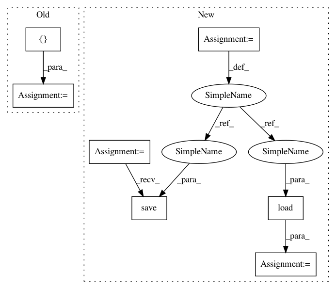

0bfb9daa540308cca9663bdf66a6266d599cf8ed,gensim/test/test_tfidfmodel.py,TestTfidfModel,testPersistenceCompressed,#TestTfidfModel#,61
Before Change
model.save(fname)
model2 = tfidfmodel.TfidfModel.load(fname, mmap=None)
self.assertTrue(model.idfs == model2.idfs)
tstvec = []
self.assertTrue(np.allclose(model[tstvec], model2[tstvec])) // try projecting an empty vector
// endclass TestTfidfModel
After Change
self.assertTrue(np.allclose(model[[]], model2[[]])) // try projecting an empty vector
// Test persistence with using `smartirs`
fname = get_tmpfile("gensim_models_smartirs.tst.gz")
model = tfidfmodel.TfidfModel(self.corpus, smartirs="ntc")
model.save(fname)
model2 = tfidfmodel.TfidfModel.load(fname, mmap=None)
self.assertTrue(model.idfs == model2.idfs)
tstvec = [corpus[1], corpus[2]]
self.assertTrue(np.allclose(model[tstvec[0]], model2[tstvec[0]]))
self.assertTrue(np.allclose(model[tstvec[1]], model2[tstvec[1]]))
In pattern: SUPERPATTERN
Frequency: 3
Non-data size: 7
Instances
Project Name: RaRe-Technologies/gensim
Commit Name: 0bfb9daa540308cca9663bdf66a6266d599cf8ed
Time: 2018-01-15
Author: mrmohitrathoremr@gmail.com
File Name: gensim/test/test_tfidfmodel.py
Class Name: TestTfidfModel
Method Name: testPersistenceCompressed
Project Name: RaRe-Technologies/gensim
Commit Name: 0bfb9daa540308cca9663bdf66a6266d599cf8ed
Time: 2018-01-15
Author: mrmohitrathoremr@gmail.com
File Name: gensim/test/test_tfidfmodel.py
Class Name: TestTfidfModel
Method Name: testPersistence
Project Name: nipy/dipy
Commit Name: 2df29df88d4b603b0e89e45481a062c38d4b829d
Time: 2017-03-28
Author: marc.cote.19@gmail.com
File Name: dipy/viz/tests/test_ui.py
Class Name:
Method Name: test_ui_textbox